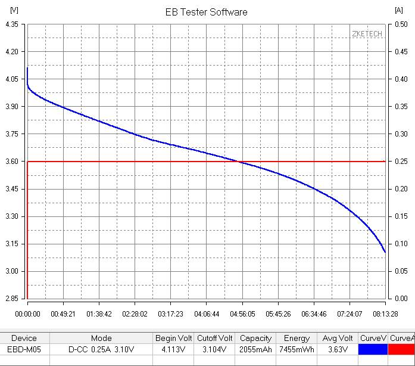

The Zketech EBD-M05 is a mini electronic load for testing the power capacity of batteries and powerbanks. You can download EB Tester Software to plot the discharge curve in realtime on a PC via a serial port. Data values can be saved into a CSV file.
Features:
Price: USD21
PC interface: MicroUSB
Cutoff Voltage setting: 0.1-19.5V, min step 10mV
Discharge current setting: 0.05-5.00A, min step 10mA(max power 30W)
Discharge mode: constant current
Monitor mode: voltage only
Voltage measurement: 0.00-19.5V, accurate to 0.005V, error ±0.5%
Current measurement: 0.05-5.00A, accurate to 0.005A, error ±0.5%
Capacity test: 0-10Ah: resolution 0.001Ah, 10Ah-100Ah: resolution 0.01Ah, 100Ah-: resolution 0.1Ah
Wiring method: four-wire measurement of voltage (V) and current (A)
Monitor discharge with EBD-M05
2400mah Li-Po Battery
Ikea 2450mah Nimh Battery
When testing discharge, the device charts both voltage and current on the gui. But in Monitor mode (for use during charging) only voltage plotting is available, current is not measured :(
However another tester called EBD-M03 shown below has an additional terminal point M+ which enables it to measure voltage and current making it a more useful datalogger. But that costs USD56 which is rather annoying if you have already bought the M05.
Monitor charging with EBD-M03
So hack the M05!
From examining a picture of the bottom of EBD-M03,the M+ screw terminal is connected to the IRLZ44N MOSFET source pin. Hence to be able to measure current, all that's needed is an additional screw terminal soldered to the same MOSFET pin on the EBD-M05 like this:
Fortunately the software permits current measurement functionality without a device id check. With this easy hack, you can now plot voltage and current in Monitor mode during battery charging.